청소년상담사-3급(2교시) (2020-10-10 기출문제)
1과목: 학습이론
1. 학습에 관한 뇌과학적 설명으로 옳지 않은 것은?
- 도파민은 정적강화와 관련된 신경전달 물질이다.
- 아세틸콜린과 세로토닌은 기억과 관련된 신경전달 물질이다.
- 뇌의 우반구가 손상되면 신체의 왼쪽 부분이 영향을 받는다.
- 뇌의 쾌락중추에 직접적으로 전기자극을 가하는 강화 절차를 실시하면, 자극이 종료되어도 소거가 급격히 일어나지 않는다.
- 거울 뉴런은 인간이 아닌 다른 동물들에게도 발견된다.
(정답률: 60%)

2. 뇌의 가소성(plasticity)에 관한 설명으로 옳지 않은 것은?
- 신경가소성은 경험의 결과로서 뇌가 연결을 재조직하거나 수정하는 능력을 말한다.
- 학습 경험은 뉴런 간의 새로운 시냅스를 발달시킬 수 있다.
- 신경가소성은 환경 자극이 부족할 때 더 활발하게 일어난다.
- 신경생성(neurogenesis)은 성인기에도 진행된다.
- 신경생성은 뇌의 특정 부위 손상 시, 그 영역의 기능 회복에 도움이 된다.
(정답률: 78%)
3. 각성에 관한 설명으로 옳은 것을 모두 고른 것은?
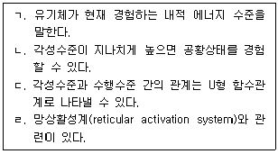
- ㄱ, ㄷ
- ㄴ, ㄹ
- ㄷ, ㄹ
- ㄱ, ㄴ, ㄷ
- ㄱ, ㄴ, ㄹ
(정답률: 65%)
4. 고전적 조건형성에 관한 설명으로 옳은 것을 모두 고른 것은?
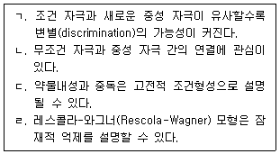
- ㄱ, ㄴ
- ㄱ, ㄹ
- ㄴ, ㄷ
- ㄱ, ㄷ, ㄹ
- ㄴ, ㄷ, ㄹ
(정답률: 38%)
5. 내재적(intrinsic) 동기에 관한 설명으로 옳지 않은 것은?
- 몰입(flow)은 내재적 동기에 해당된다.
- 내재적 동기가 높아질수록 외재적 동기는 낮아진다.
- 내재적 동기는 시간이 경과함에 따라 달라질 수 있다.
- 과제를 선택할 수 있는 자율성이 주어지면 내재적 동기가 높아지는 경향이 있다.
- 내재적으로 동기화된 과제에 외적 보상이 더해지면 내재적 동기가 감소될 수 있다.
(정답률: 62%)
6. 고전적 조건형성의 자발적 회복에 관한 설명으로 옳은 것은?
- 소거 후 추가적 훈련이 필요한 절차이다.
- 과거에 강화를 받았던 행동이 재출현하는 현상이다.
- 조건 자극 없이 무조건 자극만 추가로 제시하는 절차이다.
- 소거 후 일정 시간이 지난 다음 진행되는 절차이다.
- 학습이 소거 절차에서 완전히 사라졌다는 것을 보여주는 증거이다.
(정답률: 55%)
7. 고전적 조건형성의 적용 사례로 옳지 않은 것은?
- 쥐가 설탕물을 마실 때 소음에 노출되면 설탕물에 대한 맛혐오가 학습된다.
- 인기있는 모델이 A제품을 광고하면 A제품에 대한 긍정적 이미지가 학습된다.
- 무의미철자를 보는 중 무서운 장면이 나타나면 무의미철자에 대한 공포가 학습된다.
- 아침에 머리를 감은 날 시험을 망치면 시험 보는 날은 머리를 감지 않는 행동이 학습된다.
- 범죄 뉴스에서 특정 국가의 사람을 보면 그 국가 국민에 대한 편견이 학습된다.
(정답률: 69%)
8. 다음 사례에 해당하는 강화계획으로 옳은 것은?
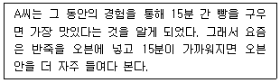
- 변동비율강화
- 고정비율강화
- 변동간격강화
- 고정간격강화
- 연속강화
(정답률: 75%)
9. 귀인의 속성에 관한 분류가 옳은 것은?
- 능력이나 적성: 내적, 안정적, 통제 불가능
- 과제 난이도: 외적, 불안정적, 통제 가능
- 운이나 우연한 기회: 외적, 안정적, 통제 불가능
- 시험 당일 기분 상태: 외적, 안정적, 통제 가능
- 꾸준한 장기적인 노력: 내적, 불안정적, 통제 불가능
(정답률: 75%)
10. 뇌의 구조와 기능의 관계로 옳지 않은 것은?
- 편도체: 정서 기억
- 기저핵: 서술적 기억
- 해마: 새로운 기억 저장
- 두정엽: 공간적 특성에 대한 사고
- 전두엽: 학습전략, 주의 집중 등 의식적인 사고
(정답률: 46%)
11. 다음 내용에 해당되는 이론 또는 원리는?
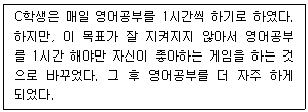
- 2과정 이론
- 추동감소 이론
- 자극대체이론
- 반응박탈 이론
- 프리맥의 원리
(정답률: 80%)
12. 학습된 무력감(learned helplessness)에 관한 설명으로 옳은 것을 모두 고른 것은?
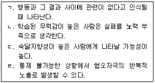
- ㄱ, ㄷ
- ㄱ, ㄹ
- ㄴ, ㄹ
- ㄱ, ㄴ, ㄷ
- ㄴ, ㄷ, ㄹ
(정답률: 64%)
13. 망각에 관한 설명으로 옳은 것은?
- 망각은 소거와 동일한 의미를 지닌다.
- 순행간섭에 의한 망각은 선행 학습량이 많을수록 증가한다.
- 기억의 왜곡이론은 억압을 망각의 주된 원인으로 본다.
- 역행간섭은 망각을 지연시키는 기능을 수행한다.
- 단서의존망각은 소멸에 의한 망각을 설명하는 개념이다.
(정답률: 67%)
14. 기억 관련 개념에 관한 설명으로 옳은 것을 모두 고른 것은?
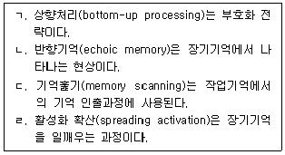
- ㄱ, ㄴ
- ㄴ, ㄷ
- ㄷ, ㄹ
- ㄱ, ㄴ, ㄹ
- ㄱ, ㄷ, ㄹ
(정답률: 42%)
15. 각 이론의 주요 입장에 관한 설명으로 옳은 것을 모두 고른 것은?
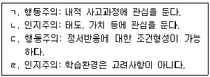
- ㄱ, ㄴ
- ㄱ, ㄹ
- ㄴ, ㄷ
- ㄱ, ㄴ, ㄷ
- ㄴ, ㄷ, ㄹ
(정답률: 76%)
16. 이론과 주장의 연결이 옳지 않은 것은?
- 연합주의: 학습은 인지와 정서의 결합이다.
- 형태주의: 전체는 부분의 합 이상이다.
- 구성주의: 지식은 능동적 구성의 산물이다.
- 진화심리학: 개인차 중 일부는 유전으로 전달된다.
- 신경생리학: 해마는 학습에서 중요한 역할을 수행한다.
(정답률: 50%)
17. 각 학자의 이론적 관점에 관한 설명으로 옳은 것은?
- 분트(W. Wundt): 기존의 실험 중심 연구에 반기를 들었다.
- 왓슨(J. Watson): 내성법을 받아들인 이론가 중 한 명이다.
- 피아제(J. Piaget): 인지적 구성주의 입장을 취한다.
- 스키너(B. Skinner): '학습된 무력감'을 최초로 제안하였다.
- 비고츠키(L. Vygotsky): 사회문화이론에 동기 개념을 도입하였다.
(정답률: 41%)
18. 다음 사례에서 볼 수 있는 학습전략은?
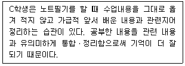
- 정교화(elaboration)
- 조직화(organization)
- 모니터링(monitoring)
- 자기언어화(self-verbalization)
- 시각적 심상(visual imagery)
(정답률: 40%)
19. 다음 사례의 학습습관을 설명하는 이론은?
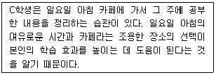
- 자기조절학습이론(self-regulated learning theory)
- 처리수준이론(levels-of-processing theory)
- 상황학습이론(situated learning theory)
- 이중부호화이론(dual-coding theory)
- 비계설정이론(scaffolding theory)
(정답률: 56%)
20. 반두라(A. Bandura)의 이론적 개념이 아닌 것은?
- 신념
- 일반화
- 자기효능감
- 상호결정주의
- 인지적 모델링
(정답률: 48%)
21. 초기 심리학 입장 중 구조주의(structuralism)에 관한 설명으로 옳은 것은?
- 기능주의(functionalism) 입장의 이론적 기반이 되었다.
- 제임스(W. James)의 학술적 성과로부터 영향을 받았다.
- 의식의 개별 요소에 대한 분석보다 연속적 흐름에 대한 이해를 강조하였다.
- 행동주의가 심리학 연구의 주류로 자리를 잡는 데 중요한 역할을 하였다.
- 연구대상자가 자신의 경험을 언어적으로 보고한 것을 관찰하는 방식으로 연구를 진행하였다.
(정답률: 27%)
22. 반두라(A. Bandura)가 제안한 관찰학습 과정에 포함되지 않는 것은?
- 주의(attention)
- 파지(retention)
- 행동산출(behavioral production)
- 동기(motivation)
- 자동화(automatization)
(정답률: 76%)
23. 학습에 관한 설명으로 옳지 않은 것은?
- 성숙에 의한 변화는 학습이 아니다.
- 수행이 없어도 학습은 일어날 수 있다.
- 행동 잠재력의 변화는 학습으로 볼 수 없다.
- 태도의 변화는 학습의 영역에 포함된다.
- 학습은 경험을 통하여 이루어진다.
(정답률: 61%)
24. 다음 사례에 관한 설명으로 옳지 않은 것은?
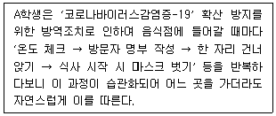
- 절차적 지식을 습득하는 사례이다.
- 습관화 과정에서 시연의 역할이 중요하다.
- 인출속도가 비교적 빠른 지식에 관한 것이다.
- 저장 용량이 제한된 기억에 관한 것이다.
- 부호화와 관련이 있다.
(정답률: 72%)
25. 전이(transfer) 유형에 관한 설명으로 옳은 것을 모두 고른 것은?
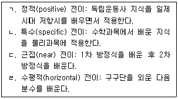
- ㄱ, ㄴ
- ㄴ, ㄷ
- ㄷ, ㄹ
- ㄱ, ㄴ, ㄹ
- ㄱ, ㄷ, ㄹ
(정답률: 54%)
2과목: 청소년 이해론
26. 마르샤(J. Marcia)의 자아정체감 이론에서 위기에 처해 있으면서 대안을 탐색하지만 아직 의사결정을 내리지 못한 상태는?
- 정체감 유예
- 정체감 유실
- 정체감 성취
- 정체감 혼미
- 정체감 분리
(정답률: 45%)
27. 피아제(J. Piaget)의 형식적 조작기에 나타나는 특성을 모두 고른 것은?
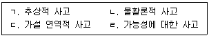
- ㄱ, ㄴ
- ㄷ, ㄹ
- ㄱ, ㄴ, ㄷ
- ㄱ, ㄷ, ㄹ
- ㄱ, ㄴ, ㄷ, ㄹ
(정답률: 46%)
28. 엘킨드(D. Elkind)의 개인적 우화(personal fable)에 관한 설명으로 옳지 않은 것은?
- 자기중심성(egocentrism)의 대표적 현상 중 하나이다.
- 다른 사람들이 나를 관심의 초점으로 생각하는 현상이다.
- 어떠한 사건을 자신에게 적용시킬 때는 일반적인 확률을 무시하거나 왜곡하는 현상이다.
- 자신의 사고와 감정이 너무나 독특해서 남들이 이해할 수 없을 것이라고 생각하는 것이다.
- 약물을 복용해도 자신의 독특성으로 인해 중독현상이 없을 것이라고 생각하는 것은 개인적 우화의 예이다.
(정답률: 46%)
29. 다음 설명에 해당하는 학자는?
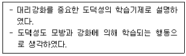
- 프로이드(S. Freud)
- 로저스(C. Rogers)
- 피아제(J. Piaget)
- 반두라(A. Bandura)
- 콜버그(L. Kohlberg)
(정답률: 52%)
30. MBTI(Myers-Briggs Type Indicator)의 선호지표(indicator)가 아닌 것은?
- 내향형(introversion)
- 직관형(intuition)
- 사고형(thinking)
- 감각형(sensing)
- 의식형(consciousness)
(정답률: 60%)
31. ( )에 적합한 학자가 순서대로 옳은 것은?
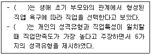
- 로우(A. Roe), 수퍼(D. Super)
- 로우(A. Roe), 홀랜드(J. Holland)
- 수퍼(D. Super), 홀랜드(J. Holland)
- 수퍼(D. Super), 긴즈버그(E. Ginzberg)
- 홀랜드(J. Holland), 긴즈버그(E. Ginzberg)
(정답률: 25%)
32. 또래집단의 역할 또는 기능에 해당하는 것을 모두 고른 것은?
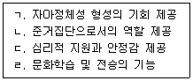
- ㄱ, ㄷ
- ㄴ, ㄹ
- ㄱ, ㄴ, ㄷ
- ㄴ, ㄷ, ㄹ
- ㄱ, ㄴ, ㄷ, ㄹ
(정답률: 52%)
33. 설리반(H. Sullivan)의 대인관계 발달단계별 특성으로 옳지 않은 것은?
- 아동기: 부모의 관심을 얻으려는 욕구가 강함
- 소년ㆍ소녀기: 또래 놀이친구를 얻고자 하는 욕구가 커짐
- 전청소년기: 성적 접촉의 욕구가 강함
- 청소년초기: 이성관계를 형성하려는 욕구가 강함
- 청소년후기: 성인사회에 통합하려는 욕구가 커짐
(정답률: 57%)
34. 청소년의 근로시간과 관련된 근로기준법의 내용이다. ( )에 들어갈 숫자가 순서대로 옳은 것은?
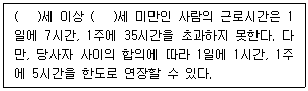
- 9, 18
- 10, 14
- 13, 18
- 14, 19
- 15, 18
(정답률: 37%)
35. 다음 설명에 해당하는 것은?
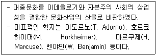
- 구조주의
- 후기 구조주의
- 프랑크푸르트학파
- 포스트모더니즘
- 엘리트주의적 비판론
(정답률: 34%)
36. 베블렌(T. Veblen)의 소비이론에 관한 설명으로 옳은 것은?
- 소비는 물건을 구매해서 상품의 경제적 효용가치를 사용하는 행위이다.
- 사회적 지위나 성공에 대한 상징수단으로 소비행위를 설명한다.
- 소비행위의 핵심 구성체계로 아비투스(habitus)를 강조한다.
- 소비는 개인과 집단의 과시가 아닌 상품에 부여된 기호를 소비하는 것이다.
- 소비행위를 문화자본의 하나인 제도적 문화자본으로 규정하였다.
(정답률: 38%)
37. 다음 설명에 해당하는 문화의 특성은?
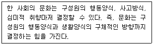
- 미래예측성
- 선천성
- 가변성
- 다양성
- 상대성
(정답률: 29%)
38. 청소년활동 진흥법상 국가 및 지방자치단체의 청소년문화활동 지원 규정에 명시된 것이 아닌 것은?
- 전통문화의 계승
- 청소년축제의 발굴지원
- 교포청소년교류활동의 지원
- 청소년동아리활동의 활성화
- 청소년의 자원봉사활동의 활성화
(정답률: 24%)
39. 머튼(R. Merton)의 아노미 이론 중, 기존의 문화적 목표는 추구하지만 합법적인 수단이 없어 부당하게 목표를 추구하는 유형은?
- 반항형
- 도피형
- 의례형
- 혁신형
- 동조형
(정답률: 22%)
40. 청소년복지 지원법상 청소년복지지원기관에 해당하는 것은?
- 청소년자립지원관
- 한국청소년상담복지개발원
- 청소년쉼터
- 청소년치료재활센터
- 청소년회복지원시설
(정답률: 35%)
41. 학교 밖 청소년 지원에 관한 법률상 학교 밖 청소년에 해당하는 자를 모두 고른 것은? (단, 주어진 조건만 고려할 것)
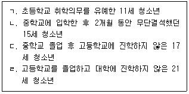
- ㄱ, ㄴ
- ㄱ, ㄷ
- ㄴ, ㄹ
- ㄱ, ㄴ, ㄷ
- ㄱ, ㄴ, ㄹ
(정답률: 34%)
42. 학교 밖 청소년 지원에 관한 법률상 학교 밖 청소년에 대한 국가 및 지방자치단체의 지원내용에 해당하는 것을 모두 고른 것은?
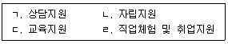
- ㄱ, ㄴ
- ㄱ, ㄷ
- ㄴ, ㄷ
- ㄱ, ㄴ, ㄷ
- ㄱ, ㄴ, ㄷ, ㄹ
(정답률: 54%)
43. 청소년문제행동 및 대응 등에 관한 설명으로 옳지 않은 것은?
- 여성가족부장관은 법령에 따라 학교폭력의 예방 및 대책에 관한 기본계획을 5년마다 수립해야 한다.
- 시장ㆍ군수ㆍ구청장은 법령에 따라 청소년유해환경 개선활동을 수행하는 시민단체를 청소년유해환경감시단 운영기관으로 지정할 수 있다.
- 청소년자살은 2007년 이후 청소년 사망원인 중 1위를 기록하고 있다.
- 청소년자립지원관은 청소년쉼터 또는 청소년회복지원시설의 지원을 받았는데도 가정ㆍ학교ㆍ사회로 복귀하여 생활할 수 없는 청소년을 대상으로 한다.
- 여성가족부장관은 법령에 따라 3년마다 학교 밖 청소년에 대한 실태조사를 실시하고 그 결과를 공표해야 한다.
(정답률: 22%)
44. 청소년비행에 관한 학자와 이론내용이 바르게 연결된 것은?
- 코헨(A. Cohen) - 하층지역에는 본래부터 비행 가치와 문화가 존재하기 때문에 청소년들이 비행을 저지른다고 보았다.
- 써덜랜드(E. Sutherland) - 청소년이 자기 문제행동을 정당화함으로써 내적 통제가 약화되어 비행으로 이어진다고 보았다.
- 클로워드(R. Cloward)와 올린(L. E. Ohlin) - 비행하위문화를 범죄하위문화, 동조하위문화, 도피(은둔)하위문화로 분류하였다.
- 허쉬(T. Hirschi) - 사회와의 유대관계가 청소년의 비행가능성을 높이거나 비행동기를 통제할 수 있다고 보았다.
- 밀러(W. Miller) - 하층 청소년들이 중산층 기준에 맞추는 과정에서 지위좌절을 경험하게 되고 이런 좌절이 비행하위문화를 형성한다고 보았다.
(정답률: 27%)
45. 다음 설명에 해당하는 것은?
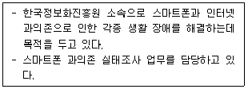
- Wee센터
- 청소년쉼터
- 스마트쉼센터
- 국립청소년인터넷드림마을
- 국립중앙청소년디딤센터
(정답률: 42%)
46. 탈북학생 맞춤형 교육에 관한 설명으로 옳지 않은 것은?
- 여성가족부는 탈북학생의 학교 및 사회적응력을 높이기 위해 교육경로를 단계별로 체계화하여 교육지원을 하고 있다.
- 초등학생에 해당하는 탈북학생은 '입국 초기'에는 하나원에서 생활하며 삼죽초등학교에서 학업과 사회적응을 지원받는다.
- '전환기'를 맞는 탈북학생들을 위해 한겨레 중ㆍ고등학교를 운영하고 있으며 일반 학교와의 협력사업도 실시하고 있다.
- '정착기'의 학교 맞춤형 교육 사업에서는 정규학교를 중심으로 탈북학생이 정착지 학교에서 생활하는데 필요한 종합적 지원을 제공한다.
- 탈북학생 맞춤형 교육은 개인특성에 따른 교육 수요를 반영한 맞춤형 교육 강화를 중점 추진방향으로 삼는다.
(정답률: 30%)
47. 하트(R. Hart)의 참여 사다리모델에서 실질적 참여로 볼 수 없는 단계는?
- 장식 단계(Decoration)
- 청소년이 시작하고 청소년이 감독하는 단계(Child-initiated and directed)
- 성인들이 협의하고 정보를 제공하는 단계(Consulted and informed)
- 성인들이 시작하고 청소년과 의사 결정을 공유하는 단계(Adult-initiated, shared decision with children)
- 성인들이 정하지만 정보는 제공되는 단계(Assigned but informed)
(정답률: 40%)
48. 청소년복지 지원법령상 지역사회 청소년통합지원체계 구성 시 반드시 포함하여야 하는 필수연계기관에 포함되지 않는 것은?
- 지방자치단체
- 청소년 비행예방센터
- 보호관찰소
- 보건소
- 청소년수련관
(정답률: 20%)
49. 우리나라 청소년은 공직선거법상 몇 세 이상부터 대통령 및 국회의원 선거권이 있는가?
- 16세
- 17세
- 18세
- 19세
- 20세
(정답률: 38%)
50. 소년법상 보호처분에 관한 내용으로 옳지 않은 것은?
- 사회봉사명령 처분은 14세 이상의 소년에게만 할 수 있다.
- 소년의 보호처분은 그 소년의 장래 신상에 어떠한 영향도 미치지 아니한다.
- 수강명령은 100시간을 초과할 수 없다.
- 보호관찰관의 단기 보호관찰기간은 1년으로 한다.
- 단기로 소년원에 송치된 소년의 보호기간은 3개월을 초과하지 못한다.
(정답률: 20%)
3과목: 청소년 수련 활동론
51. 콜브(D. Kolb)가 제시한 경험학습의 진행과정을 순서대로 옳게 나열한 것은?
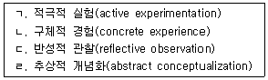
- ㄱ - ㄴ - ㄹ - ㄷ
- ㄱ - ㄷ - ㄴ - ㄹ
- ㄴ - ㄷ - ㄱ - ㄹ
- ㄴ - ㄷ - ㄹ - ㄱ
- ㄴ - ㄹ - ㄷ - ㄱ
(정답률: 8%)
52. 다음이 설명하는 프로그램 유형은?
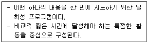
- 단위 프로그램
- 연속 프로그램
- 통합 프로그램
- 종합 프로그램
- 단계적 프로그램
(정답률: 35%)
53. 청소년프로그램개발 패러다임 중 비판주의 패러다임에 관한 설명에 해당하는 것은?
- 외부세계에 존재하는 새로운 지식과 정보, 기술을 청소년에게 전달하는 도구적인 성격이 강하다.
- 청소년지도사는 빈 그릇 상태인 청소년에게 무엇인가를 채워주는 권위 있는 사람으로 인식된다.
- 프로그램의 목표에 의해 프로그램의 내용이 결정되는 성격이 강하다.
- 교육을 의식화 과정으로 간주하고, 억압상태로부터의 해방과 비판적 실천행위를 강조한다.
- 프로그램에 참여하는 청소년은 수동적이고 피동적인 존재로 간주된다.
(정답률: 17%)
54. 프로그램개발 통합모형에서 프로그램 관련 상황분석과 프로그램개발의 기본방향이 설정되는 단계는?
- 프로그램 설계
- 프로그램 기획
- 프로그램 마케팅
- 프로그램 실행
- 프로그램 평가
(정답률: 27%)
55. 요구(needs)에 관한 설명으로 옳은 것을 모두 고른 것은?
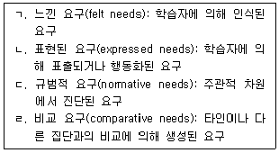
- ㄱ, ㄷ
- ㄴ, ㄹ
- ㄱ, ㄴ, ㄹ
- ㄴ, ㄷ, ㄹ
- ㄱ, ㄴ, ㄷ, ㄹ
(정답률: 12%)
56. 켈러(J. Keller)의 ARCS모형에 기초한 동기유발전략 중 관련성(Relevance) 향상 전략에 해당하는 것은?
- 특이성의 전략
- 난이도 계열화의 전략
- 긍정적인 피드백의 전략
- 친밀성의 전략
- 성공기회 제공의 전략
(정답률: 21%)
57. 개인중심 청소년지도방법에 해당하는 것을 모두 고른 것은?
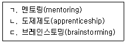
- ㄴ
- ㄱ, ㄴ
- ㄱ, ㄷ
- ㄴ, ㄷ
- ㄱ, ㄴ, ㄷ
(정답률: 19%)
58. 청소년 기본법령상 청소년수련관의 청소년지도사 배치기준에 관한 내용이다. ( )에 들어갈 숫자가 순서대로 옳은 것은?
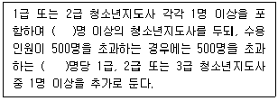
- 3, 150
- 3, 200
- 3, 250
- 4, 200
- 4, 250
(정답률: 19%)
59. 청소년 기본법령상 청소년특별회의에 관한 내용으로 옳지 않은 것은?
- 여성가족부장관은 특별회의의 참석 대상을 정할 때에는 성별ㆍ연령별ㆍ지역별로 각각 전체 청소년을 대표할 수 있도록 노력하여야 한다.
- 여성가족부장관이 공개모집을 통하여 선정한 청소년은 참석대상이 된다.
- 특별회의는 2년마다 개최하여야 한다.
- 참석대상ㆍ운영방법 등 세부적인 사항은 대통령령으로 정한다.
- 여성가족부장관은 특별회의의 의제와 관련된 중앙행정기관의 장이 회의에 참석하도록 협조를 요청할 수 있다.
(정답률: 30%)
60. 청소년 기본법상 한국청소년단체협의회의 청소년육성을 위한 활동에 해당하는 것을 모두 고른 것은?
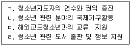
- ㄱ, ㄷ
- ㄷ, ㄹ
- ㄱ, ㄴ, ㄹ
- ㄴ, ㄷ, ㄹ
- ㄱ, ㄴ, ㄷ, ㄹ
(정답률: 24%)
61. 청소년활동 진흥법 제2조(정의) 규정의 일부이다. ( )에 들어갈 용어로 옳은 것은?
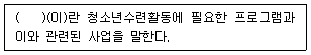
- 청소년이용시설
- 청소년수련시설
- 청소년수련거리
- 청소년수련지구
- 청소년어울림마당
(정답률: 29%)
62. 청소년활동 진흥법령상 ( )에 들어갈 숫자로 옳은 것은?
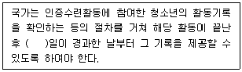
- 7
- 10
- 14
- 15
- 20
(정답률: 20%)
63. 청소년활동 진흥법령상 청소년수련시설의 안전기준에 관한 내용이다. ( )에 들어갈 내용으로 옳은 것은?
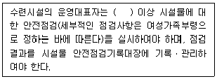
- 매월 1회
- 분기별 1회
- 반기별 1회
- 매년 1회
- 2년마다 1회
(정답률: 32%)
64. 청소년활동 진흥법상 ( )에 들어갈 숫자로 옳은 것은?
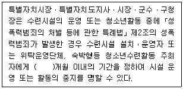
- 3
- 4
- 5
- 6
- 9
(정답률: 25%)
65. 청소년활동 진흥법령상 위험도가 높은 청소년수련활동에 해당하는 것을 모두 고른 것은?
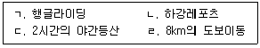
- ㄱ, ㄴ
- ㄱ, ㄷ
- ㄱ, ㄴ, ㄹ
- ㄴ, ㄷ, ㄹ
- ㄱ, ㄴ, ㄷ, ㄹ
(정답률: 19%)
66. 청소년활동 진흥법령상 수련시설의 종합평가에 관한 내용으로 옳지 않은 것은?
- 여성가족부장관은 수련시설에 대한 종합평가를 2년마다 1회 이상 실시하여야 한다.
- 여성가족부장관은 종합평가결과를 교육부장관 등 관계 기관의 장에게 알려야 한다.
- 종합평가의 주기ㆍ방법ㆍ절차에 필요한 사항은 한국청소년활동진흥원이 정한다.
- 국가는 종합평가의 결과가 우수한 수련시설에 대하여 포상 등을 실시할 수 있다.
- 종합평가는 수련시설의 전문성 강화와 운영의 개선 등을 위하여 실시된다.
(정답률: 16%)
67. 청소년활동 진흥법 제2조(정의) 규정의 일부이다. ( )에 들어갈 내용이 순서대로 옳은 것은?
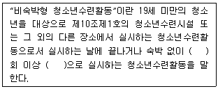
- 1, 비정기적
- 1, 정기적
- 2, 비정기적
- 2, 정기적
- 3, 비정기적
(정답률: 16%)
68. 청소년활동 진흥법상 ( )에 들어갈 내용으로 옳은 것은?
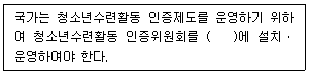
- 한국청소년정책연구원
- 한국청소년단체협의회
- 한국청소년활동진흥원
- 한국청소년수련시설협회
- 한국청소년상담복지개발원
(정답률: 22%)
69. 청소년활동 진흥법령상 청소년수련시설에 해당하는 것은?
- 어린이회관
- 청소년특화시설
- 청소년쉼터
- 청소년치료재활센터
- 청소년자립지원관
(정답률: 31%)
70. 청소년활동 진흥법령상 '숙박형등 청소년수련활동 계획의 신고'에 관한 내용으로 옳은 것은?
- 20세 청소년집단을 대상으로 숙박형등 청소년수련활동을 주최하려는 자는 그 활동계획을 신고하여야 한다.
- 숙박형등 청소년수련활동을 주최하려는 자는 그 활동계획의 신고가 수리되기 전이라도 모집활동을 할 수 있다.
- 활동계획의 신고서는 한국청소년활동진흥원에 제출하여야 한다.
- 활동계획을 신고한 자는 신고한 내용의 변경이 필요한 경우, 활동 후 3일 이내에 변경신고서를 제출하여야 한다.
- 청소년이 부모 등 보호자와 함께 참여하는 경우는 활동계획의 신고 대상에서 제외된다.
(정답률: 16%)
71. 청소년활동 진흥법령상 청소년운영위원회에 관한 내용으로 옳지 않은 것은?
- 위원장은 위원 중에서 호선(互選)한다.
- 국가 및 지방자치단체는 예산의 범위에서 운영위원회의 운영에 필요한 경비를 지원할 수 있다.
- 청소년운영위원회의 구성ㆍ운영 등에 필요한 사항은 대통령령으로 정한다.
- 위원의 임기는 2년으로 한다.
- 수련시설운영단체의 대표자는 운영위원회의 의견을 수련시설 운영에 반영하여야 한다.
(정답률: 26%)
72. 국제청소년성취포상제에 관한 설명으로 옳지 않은 것은?
- 영국의 에딘버러(Edinburgh) 공작에 의해 시작되었다.
- 은장 단계에서는 4박 5일의 합숙 활동을 해야 한다.
- 기본이념에는 비경쟁성이 포함된다.
- 동장 단계에서는 봉사, 자기개발, 신체단련, 탐험을 해야 한다.
- 한국청소년활동진흥원이 국제청소년성취포상제의 한국사무국이다.
(정답률: 27%)
73. 청소년수련활동 인증기준 중 공통기준에 해당하지 않는 것은?
- 프로그램 자원운영
- 지도자 역할 및 배치
- 공간과 설비의 확보 및 관리
- 안전관리계획
- 이동관리
(정답률: 20%)
74. 청소년 관련법의 제정연도가 빠른 순서대로 나열한 것은?
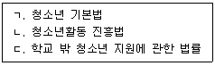
- ㄱ - ㄴ - ㄷ
- ㄱ - ㄷ - ㄴ
- ㄴ - ㄱ - ㄷ
- ㄴ - ㄷ - ㄱ
- ㄷ - ㄱ - ㄴ
(정답률: 29%)
75. 청소년방과후아카데미에 관한 설명으로 옳지 않은 것은?
- 청소년 기본법에 법적 근거를 두고 있다.
- 초등학교 1학년부터 중학교 3학년까지가 지원 대상이다.
- 한국청소년활동진흥원에서 운영지원을 하고 있다.
- 청소년수련시설에 설치ㆍ운영할 수 있다.
- 담임(SM)은 상담 및 생활기록ㆍ관리 업무를 수행한다.
(정답률: 34%)